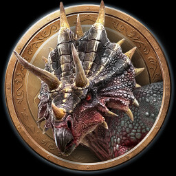
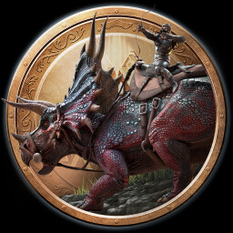

TÚ PRIMER LOGRO
¡Has domesticado a un dinosaurio!

primera Montura
¡Has Montado en un Dinosaurio!
Jinete de Rex
¡Has montado en la espalda de un T-Rex!
| Logro 1 | Logro 2 | Descripción |
|---|---|---|
| Has domesticado un dinosaurio | Has Montado un dinosaurio | No todos los dinosaurios que son domesticados, pueden ser montados por el personaje, en este caso domesticar un dinosurio de tamaño medio o grande permite desbloquear estas insignias, además de permitirle al jugador transportar sus materiales en el dino y así vivir grandes aventuras |
| Has montado un dinosaurio | Has montado en la espalda de un T-rex | Domesticar un T-rex es una de las grandes hazañas, pues esta gran bestia requiere de tiempo, armamento y estrategia para ser domesticado, pero una vez hecho, tendrás a un amigo fiel que te seguira a todos lados. Aunque no se compara al ¡Gran giganotosaurio! |
|
|